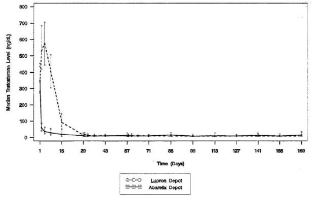
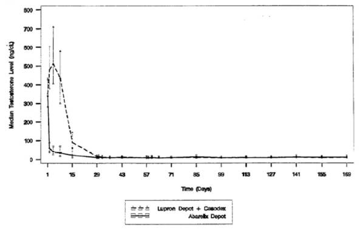

RÉSUMÉ DES CARACTÉRISTIQUES DU PRODUIT
ANSM - Mis à jour le : 26/11/2010
PLENAXIS 100 mg, poudre et solvant pour suspension injectable
2. COMPOSITION QUALITATIVE ET QUANTITATIVE
Chaque flacon contient 100 mg d'abarelix.
Sous forme de mélange d'acétate d'abarelix et de carmellose sodique
Après reconstitution avec 2,2 ml d'une solution de chlorure de sodium à 0,9 pour cent (voir rubrique 6.6), la suspension injectable contient 50 mg/ml d'abarelix.
Après reconstitution, la solution contient moins d'une mmol de sodium (23 mg).
Pour la liste complète des excipients, voir rubrique 6.1.
Poudre et solvant pour suspension injectable.
Poudre blanche et solution limpide et incolore.
Utilisation intramusculaire.
4.1. Indications thérapeutiques
PLENAXIS est indiqué chez les hommes adultes pour mettre en route (jusqu'à 85 jours) une castration hormonale dans les carcinomes prostatiques hormonodépendants avancés ou métastatiques, lorsque s'impose un traitement antiandrogène.
4.2. Posologie et mode d'administration
100 mg de PLENAXIS doit être administré par injection intramusculaire (IM) aux 1er, 15e et 29e jours (4e semaine) et ensuite toutes les quatre semaines. Le succès du traitement par PLENAXIS peut être contrôlé par des paramètres cliniques et par le dosage périodique des taux sériques de testostérone et de PSA. Un taux élevé de PSA doit être confirmé par la vérification du taux de testostérone sérique avant de diagnostiquer un cancer de la prostate réfractaire à la castration.
Une attention particulière devra être portée à la baisse potentielle de l'efficacité dans le cas des patients dont le poids corporel est supérieur à 100 kg.
La prudence est conseillée en cas d'insuffisance hépatique ou rénale, légère ou modérée, car les données sont insuffisantes pour fournir des recommandations posologiques spécifiques. PLENAXIS ne doit pas être utilisé en cas d'insuffisance hépatique ou rénale grave.
PLENAXIS peut être remplacé par un agoniste de la gonadolibérine (GnRH) après la mise en route du traitement. Des données provenant de 176 patients indiquent que la substitution d'un agoniste de la GnRH à PLENAXIS effectuée au bout de trois mois n'a pas provoqué une augmentation cliniquement significative des taux de testostérone (poussée de testostérone)
Population pédiatrique
PLENAXIS ne doit pas être utilisé chez les enfants.
Mode d'administration
PLENAXIS doit être reconstitué avant administration.
Pour les instructions concernant la reconstitution du médicament avant administration, se reporter à la rubrique 6.6.
PLENAXIS doit être administré par injection intramusculaire.
· Hypersensibilité à la substance active ou à l'un des excipients.
· PLENAXIS ne doit pas être administré aux patients souffrant d'insuffisance hépatique ou rénale grave.
4.4. Mises en garde spéciales et précautions d'emploi
PLENAXIS ne doit pas être administré aux enfants en l'absence de données disponibles pour cette population.
PLENAXIS ne doit pas être administré aux femmes.
Il faut garder les patients en observation pendant au moins 30 minutes après chaque injection de PLENAXIS et, en cas de réaction allergique immédiate, prendre les mesures appropriées (ex.: administration d'adrénaline, de corticostéroïde, d'antihistaminique ou d'oxygène; administration intraveineuse de fluides ou jambes relevées, soit individuellement soit simultanément) (voir aussi la rubrique 4.8).
En cas d'allongement de l'intervalle QT sur les électrocardiogrammes, le médecin devra évaluer les risques dus à l'utilisation de PLENAXIS par rapport aux bénéfices du traitement chez les patients dont les valeurs QTc de base sont > 450 millisecondes (ex: syndrome du QT long congénital), ou qui sont traités par un antiarythmisant de classe Ia (ex: quinidine, procaïnamide) ou un antiarythmisant de classe III (ex: amiodarone, sotalol) ou par d'autres médicaments connus pour leur effet sur l'allongement de l'intervalle QT qui provoquent donc un effet supplétif, comme l'halopéridol, la méthadone, la palipéridone, la pentamidine, le cisapride, la venlafaxine ou le vorinostat (voir rubrique 4.8).
Au cours des essais cliniques avec PLENAXIS, un groupe de patients a dû être exclu d'une étude, car il présentait une augmentation permanente du taux de transaminases. En conséquence, les taux de transaminases devront être contrôlés aussi bien au début du traitement par PLENAXIS que périodiquement pendant le traitement. Si les taux d'ASAT ou d'ALAT (SGOT, SGPT), ou bien les deux, sont plus de trois fois supérieurs au taux normal supérieur limite, les taux devront être contrôlés une seconde fois avant l'administration de la dose suivante de PLENAXIS. Si la seconde valeur est encore plus de deux fois supérieure au taux normal supérieur limite, le traitement par PLENAXIS ne devra pas être poursuivi chez ce patient. Si la seconde valeur mesurée est moins de deux fois supérieure au taux normal supérieur limite, le patient pourra continuer le traitement, mais un contrôle des taux de transaminases devra être mis en place pendant le mois suivant puis régulièrement chaque mois. Lors des essais cliniques, la plupart des cas de taux élevés de transaminases étaient passagers et sont revenus à la normale au cours du traitement.
PLENAXIS ne doit pas être administré aux patients en cas d'insuffisance hépatique ou rénale en l'absence de nouvelles données pour ces populations.
Une attention particulière devra être portée à la baisse potentielle de l'efficacité du médicament, décrite dans la rubrique 4.2, dans le cas des patients dont le poids corporel dépasse 100 kg.
On a signalé dans la littérature médicale une diminution de la densité osseuse chez les hommes ayant subi une orchidectomie ou ayant été soumis à un traitement par un agoniste de la GnRH. De longues périodes de suppression de testostérone chez les hommes peuvent avoir des effets sur la densité osseuse. La densité osseuse n'a pas été mesurée pendant le traitement par abarelix.
Une diminution de la tolérance au glucose a été observée chez les hommes ayant subi une orchidectomie ou ayant été soumis à un traitement par un agoniste de la GnRH. Un diabète pourrait se développer ou s'aggraver; les patients diabétiques peuvent donc nécessiter une surveillance plus fréquente du taux de glucose sanguin lorsqu'ils subissent un traitement de privation androgénique. L'effet d'abarelix sur les taux d'insuline et de glucose n'a pas été étudié.
PLENAXIS contient du sodium, mais il s'agit de moins d'une mmol (23 mg) de sodium par flacon. Les patients suivant un régime contrôlé en sodium devront donc en tenir compte.
4.5. Interactions avec d'autres médicaments et autres formes d'interactions
Aucune étude d'interaction n'a été réalisée. Aucune interaction avec des médicaments métabolisés par des enzymes cytochromes P-450 ne peut être soupçonnée a priori, ces enzymes n'ayant pas d'effet sur le métabolisme de PLENAXIS. PLENAXIS possède un fort pourcentage de fixation aux protéines plasmatiques (de 96 à 99 %). Les patients traités par d'autres médicaments possédant également un fort pourcentage de fixation aux protéines plasmatiques sont susceptibles de présenter des concentrations plus élevées de ces médicaments dans le sérum, ce qui pourrait provoquer des effets secondaires.
Aucun changement en ce qui concerne les paramètres de coagulation (PT et PTT) n'a été observé chez les patients traités par warfarine pendant le traitement par PLENAXIS.
En cas d'allongement de l'intervalle QT sur les électrocardiogrammes, le médecin devra évaluer les risques dus à l'utilisation de PLENAXIS par rapport aux bénéfices du traitement chez les patients dont les valeurs QTc de base sont > 450 millisecondes (ex: syndrome du QT long congénital), ou qui sont traités par un antiarythmisant de classe Ia (ex: quinidine, procaïnamide) ou un antiarythmisant de classe III (ex: amiodarone, sotalol) ou par d'autres médicaments connus pour leur effet sur l'allongement de l'intervalle QT qui provoquent donc un effet supplétif, comme l'halopéridol, la méthadone, la palipéridone, la pentamidine, le cisapride, la venlafaxine ou le vorinostat (voir rubrique 4.8).
L'utilisation de PLENAXIS chez les femmes n'est pas indiquée (voir rubrique 4.1).
Les données non cliniques issues d'études classiques de toxicité sur la reproduction n'ont pas révélé de risque particulier pour l'homme. Abarelix est embryolétal chez les rats et les lapins. Il n'est pas exclu qu'abarelix soit également tératogène. La plupart des malformations sont apparues dans les groupes traités par abarelix, mais les données étaient peu concluantes, étant donné le nombre trop faible de portées et de fœtus disponibles pour une évaluation appropriée.
PLENAXIS diminue les taux circulants de FSH, de LH et de testostérone. Chez les hommes, PLENAXIS peut entraîner des baisses de libido réversibles, des dysfonctions érectiles réversibles, et une diminution de la fécondité. PLENAXIS n'est pas indiqué chez les femmes, mais réduirait sans doute de manière réversible la fertilité et la grossesse. PLENAXIS ne doit pas être administré aux enfants ou aux adolescents; il inhibe vraisemblablement la maturation sexuelle.
4.7. Effets sur l'aptitude à conduire des véhicules et à utiliser des machines
PLENAXIS n'a aucun effet ou presque sur la capacité de conduire un véhicule et d'utiliser des machines. Des effets indésirables fréquents survenant immédiatement après l'administration de PLENAXIS comprennent la fatigue et le vertige, qui sont probablement associés à l'injection elle-même ou à la maladie sous-jacente. Toutefois, puisque les patients sont gardés en observation pendant 30 minutes après l'administration, PLENAXIS ne devrait avoir aucun effet ou presque sur la capacité de conduire un véhicule et d'utiliser des machines.
Des réactions allergiques systémiques immédiates (ex.: urticaire, prurit, hypotension ou syncopes) ont eu lieu chez 1,1 % des patients (15 sur 1357) traités par PLENAXIS. Les symptômes sont apparus dans les 30 minutes suivant l'administration du médicament chez les 15 patients. Chez 7 de ces 15 patients, la réaction allergique systémique immédiate s'est traduite par une hypotension ou un évanouissement.
Le risque cumulatif d'une réaction allergique systémique immédiate augmentait avec la durée du traitement par PLENAXIS.
Les taux cumulatifs pour toutes les réactions allergiques systémiques immédiates observées aux 56e, 141e, 365e et 675e jours après la dose initiale étaient respectivement de 0,51 %, 0,80 %, 1,24 % et 2,91 %. Chez le sous-groupe des patients dont la réaction allergique systémique immédiate s'est traduite par une hypotension ou un évanouissement, les taux cumulatifs aux 56e, 141e, 365e et 675e jours après la dose initiale étaient respectivement de 0,22 %, 0,32 %, 0,61 % et 1,67 %.
Les effets indésirables correspondaient à ceux attendus chez des patients atteints de cancer prostatique ayant subi une castration médicale et souffrant de maladies complémentaires. Les effets indésirables les plus fréquemment rapportés comprennent des douleurs, des infections de l'appareil respiratoire, des perturbations gastro-intestinales fréquentes, des perturbations du flux urinaire dues à la tumeur sous-jacente, ainsi que les symptômes connus de la castration médicale.
Définition des fréquences: très fréquent (≥ 1/10), fréquent (≥ 1/100 à < 1/10), peu fréquent (≥ 1/1000 à < 1/100), rare (≥ 1/10000 à < 1/1000) et très rare (≥ 1/10 000).
Les effets indésirables sont classés par classes de systèmes d'organes et par fréquence.
Les effets indésirables les plus fréquents sont:
|
Classes de systèmes d'organes |
Très fréquent (≥ 1/10) |
Fréquent (≥ 1/100 à <1/10) |
Peu fréquent (≥ 1/1000 à ≤ 1/100) |
|
|
Affections hématologiques et du système lymphatique |
|
|
Coagulopathie (coagulation anormale), anémie. |
|
|
Affections cardiaques |
|
|
Hypertrophie cardiaque, arythmie, arythmie ventriculaire, bradycardie, tachycardie, palpitations, affections coronariennes. |
|
|
Affections vasculaires |
Bouffées de chaleur. |
|
Epistaxis, saignements sous-cutanés, hypertension, aggravation de l'hypertension, bouffées vasomotrices, hypotension. |
|
|
Affections de l'oreille et du labyrinthe |
|
|
Douleurs de l'oreille. |
|
|
Affections oculaires |
|
|
Cataracte, anomalies oculaires, déficience visuelle, sécheresse oculaire. |
|
|
Affections gastro-intestinales |
|
Douleurs abdominales hautes, vomissements, constipation, flatulences, diarrhée, distension abdominale. |
Péritonite, nausées, assèchement buccal, dyspepsie, mouvements intestinaux fréquents, incontinence fécale, hémorragies rectales, hémorroïdes, méléna, gingivite, maux de dents, diverticulite. |
|
|
Troubles généraux et anomalies au site d'administration |
Asthénie. |
Douleur au site d'injection, œdème périphérique, douleurs de poitrine. |
Hématome au site d'injection, inflammation au site d'injection, douleurs, inconfort, pyrexie, œdème. |
|
|
Affections du système immunitaire |
|
Réactions allergiques, démangeaisons. |
Urticaire. |
|
|
Infections et infestations |
|
|
Zona, infection des voies urinaires. |
|
|
Lésions, intoxications et complications liées aux procédures |
|
|
Blessures non spécifiques au site, blessures non classées ailleurs. |
|
|
Investigations |
|
Augmentation des taux d'enzymes hépatiques, prise de poids. |
Augmentation du taux de créatine phosphokinase dans le sang, perte de poids, souffle cardiaque, respiration anormale. |
|
|
Troubles du métabolisme et de la nutrition |
|
|
Exagération de l'appétit, perturbation du métabolisme des lipides, hyperlipidémie, hypertriglycéridémie, aggravation du diabète, goutte. |
|
|
Affections de l'appareil locomoteur et des tissus conjonctifs |
|
Faiblesse musculaire, myalgie, douleurs dans les jambes. |
Douleurs dorsales, douleurs articulaires, aggravation de l'arthrite, bursite, atrophie musculaire. |
|
|
Affections du système nerveux |
|
Vertiges, maux de tête, paresthésie. |
Ataxie, perturbations de la coordination, troubles du langage, crampes dans les jambes, perturbations de la marche, sensation anormale au toucher, aggravation des migraines, douleurs faciales (névralgie du trijumeau), syncope. |
|
|
Affections psychiatriques |
|
Anorexie mentale, dépression, troubles du sommeil, somnolence. |
Agitation, anxiété, perte de mémoire, perte de concentration, confusion, aggravation de la dépression, rêves anormaux, labilité des affects, nervosité, névrose. |
|
|
Affections du rein et des voies urinaires |
|
Pollakiurie, nycturie, strangurie. |
Hématurie, troubles de miction, incontinence urinaire, rétention d'urine, flux d'urine réduit, anomalies urinaires, dysurie. |
|
|
Affections des organes de reproduction et du sein |
Gynécomastie. |
Douleurs des mamelons, impuissance, perte de libido, douleurs testiculaires, troubles testiculaires. |
Epididymite, troubles péniens, troubles de la prostate. |
|
|
Système respiratoire, affections thoraciques et médiastinales |
|
Essoufflement. |
Bronchite, toux, mucosite du pharynx (catarrhe du pharynx), œdème pulmonaire, troubles du nasopharynx (rhinite), sinusite, inflammation des voies respiratoires supérieures. |
|
|
Affections de la peau et du tissu sous-cutané |
|
Alopécie (chute des cheveux), éruptions cutanées. |
Acné, éruptions cutanées, éruption vésiculaire, dermatite, érythème, assèchement de la peau, prurit génital, démangeaisons des parties génitales, maladies des cheveux, hyperhidrose, frissons, nodules cutanés, réactions cutanées. |
|
Une comparaison des effets indésirables induits par le traitement jusqu'au 169e jour dans le cadre de trois essais cliniques principaux et de deux essais supplémentaires montre que l'incidence de tous ces effets indésirables est similaire. Cependant, des différences notables ont été observées dans certains cas.
· L'incidence de douleurs dorsales dans les essais cliniques principaux était de 4 % et 3 % respectivement, par rapport à 1 % dans les études secondaires. Ceci peut être attribué à l'incidence cumulative de maladies métastatiques du système squelettique dans le groupe de patients des études secondaires.
· La constipation et la diarrhée étaient plus fréquentes dans l'une des études secondaires, dans laquelle étaient représentés des patients ayant des maladies symptomatiques avancées, que dans les essais principaux (constipation: 5 % `par rapport à 1 %; diarrhée: 5 % par rapport à 3 %). Ces différences peuvent être attribuées dans certaines circonstances à une utilisation plus élevée de narcoanalgésiques chez les patients ayant des maladies symptomatiques avancées, comprenant des métastases squelettiques douloureuses.
· Dans un essai clinique comparant PLENAXIS avec une combinaison d'un agoniste de la LHRH et d'un antiandrogène non stéroïdien, on a réalisé des ECG périodiques. Dans les deux groupes de traitement, l'intervalle QT, rectifié selon la formule de Fridericia, était prolongé de plus de 10 millisecondes par rapport à l'origine. Chez 20 % des patients dans les deux groupes, soit les déviations étaient de plus de 30 millisecondes de l'intervalle QTc de base, soit les valeurs QTc à la fin du traitement s'élevaient à plus de 450 millisecondes. Des résultats similaires ont été obtenus dans deux autres essais de phase III, au cours desquels PLENAXIS était comparé à un traitement actif. On ne sait pas si ces changements étaient directement liés aux médicaments de l'étude, à la suppression d'androgène ou à d'autres variables.
Le traitement par PLENAXIS pendant une période prolongée peut conduire à une réduction de la densité minérale osseuse.
Une diminution de la tolérance au glucose a été observée chez les hommes ayant subi une orchidectomie ou ayant été soumis à un traitement par un agoniste de la GnRH.
Aucun cas de surdosage n'a été signalé. Dans les essais cliniques, 6 patients atteints d'un cancer de la prostate ont reçu des doses de 150 mg maximum (quantité totale, 450 mg pendant les 4 premières semaines). Ce dosage n'a pas provoqué d'effets indésirables différant de ceux observés avec une dose de 100 mg de PLENAXIS.
5. PROPRIETES PHARMACOLOGIQUES
5.1. Propriétés pharmacodynamiques
Classe pharmacothérapeutique: AUTRES ANTAGONISTES HORMONAUX ET AGENTS APPARENTES, Code ATC: L02BX01.
Mécanisme d'action
PLENAXIS est un décapeptide synthétique, qui agit comme antagoniste de la gonadolibérine (ou GnRH). Il provoque une réduction rapide des taux sériques de l'hormone lutéinisante (LH) et de l'hormone folliculostimulante (FSH) et, en conséquence, une réduction des taux de testostérone chez les hommes et d'œstradiol chez les femmes.
Cet effet est réversible à l'arrêt du traitement.
Efficacité et sécurité cliniques
Après la première injection de 100 mg, le taux de testostérone baisse jusqu'au taux de castration (≤ 50 ng/dl) avant la fin de la première semaine chez 70 % des patients traités par PLENAXIS. Suite à une seconde injection au 15e jour, 94 % des patients sont castrés au bout de 4 semaines. PLENAXIS étant un antagoniste de la GnRH, la testostérone est réduite sans poussée préalable. Les résultats des études 149-98-02 et 149-98-03 représentent de manière typique les différences observées entre la mise en route du traitement par PLENAXIS et celle par un agoniste de la GnRH et sont traités en plus de détails ci-dessous. Au 30e jour, le même niveau de testostérone est atteint par les différentes options de traitement (PLENAXIS, agoniste de la GnRH, ou agoniste de la GnRH associé à un antiandrogène non stéroïdien). Après le 85e jour, une poussée de testostérone était plus fréquente dans le bras de traitement par PLENAXIS des études comparatives.
L'efficacité de PLENAXIS concernant la suppression de la testostérone sérique a été étudiée dans le cadre de deux essais randomisés, ouverts, avec comparateur actif (études 149-98-02 et 149-98-03). Les patients ont été randomisés dans une proportion de 2 à 1 entre deux groupes, PLENAXIS en IM à 100 mg contre un agoniste de la GnRH (étude 149-98-02), ou PLENAXIS contre un agoniste de la GnRH associé à un antiandrogène non stéroïdien (étude 149-98-03). PLENAXIS était administré par voie intramusculaire aux 1er, 15e et 29e jours (4e semaine), et toutes les quatre semaines par la suite. L'agoniste de la GnRH et l'antiandrogène non stéroïdien étaient administrés de la manière habituelle.
Dans les deux études cumulées, 100 % (348/348) des patients traités par PLENAXIS et 16 % (28/172) des patients traités par un comparateur ont évité une poussée de testostérone.
Les taux sériques de testostérone mesurés dans les études 149-98-02 et 149-98-03 sont donnés ci-dessous (Figure 1 et Figure 2).
Figure 1: Taux sériques de testostérone mesurés chez les patients de l'étude 149-98-02

Figure 2: Taux sériques de testostérone mesurés chez les patients de l'étude 149-98-03

Une réponse réussie était définie par l'accomplissement de la castration médicale au 29e jour et son maintien jusqu'au 85e jour (où l'on n'a jamais constaté deux concentrations sériques consécutives en testostérone supérieures à 50 ng/dl entre les 29e et 85e jours). Dans l'étude 149-98-02, 92 % des patients traités par PLENAXIS ainsi que 96 % des patients traités par l'agoniste de la GnRH ont fait preuve d'une réponse positive. Dans l'étude 149-98-03, 93 % des patients traités par PLENAXIS et 95 % des patients traités par l'agoniste de la GnRH + l'antiandrogène non stéroïdien ont fait preuve d'une réponse positive. Toutefois, si l'on définissait l'échec comme tout taux sérique de testostérone observé > 50 ng/dl (y compris les élévations transitoires) immédiatement avant le dosage au 29e jour puis tous les 28 jours par la suite, l'efficacité de la suppression de la testostérone diminuait avec le temps.
L'Agence européenne des médicaments a accordé une dérogation à l'obligation de soumettre les résultats d'études réalisées avec PLENAXIS dans tous les sous-groupes de la population pédiatrique pour le carcinome prostatique (voir rubrique 4.2 pour les informations concernant l'usage pédiatrique).
5.2. Propriétés pharmacocinétiques
Une dose unique de PLENAXIS (100 mg par voie intramusculaire) a été administrée à 14 sujets sains, âgés de 52 à 75 ans, et avec un poids corporel allant de 61,6 à 110,5 kg.
Résorption
Après l'administration intramusculaire de 100 mg de PLENAXIS, l'abarelix se résorbe lentement. Une concentration maximum moyenne de 43,4 (48) ng/ml a été mesurée 3 jours après l'injection. L'exposition d'abarelix, en termes d'AUC0-∞, est d'approximativement 500 ng/ml/jour.
Le poids corporel s'est avéré une covariable statistiquement importante par rapport aux concentrations d'abarelix dans les deux études cliniques pivot, mais seulement pendant les deux premiers mois de mise en route du traitement. Dans l'étude 149-98-02, le poids s'est avéré une covariable importante aux 2e, 15e, 29e, 30e, 57e et 58e jours uniquement. Dans l'étude 149-98-03, l'importance du poids en tant que covariable a été observée aux 2e, 15e, 30e et 58e jours uniquement. La relation au poids était négative, les patients les plus lourds présentant des concentrations en abarelix plus faibles. Comme il a déjà été observé pour de nombreux médicaments, les patients plus lourds ont tendance à posséder un volume de distribution du médicament plus élevé, et donc des niveaux de concentration plus faibles.
Dans l'étude 149-98-02, les patients n'ayant pas atteint le critère de castration (efficacité), possédaient un poids corporel significativement plus élevé (moyenne 97,2 ± 18,3 par rapport à 85,8 ± 16,2 kg; p<0,05, ANOVA à un critère de classification) que ceux qui atteignaient le critère de castration. La même différence n'a pas été observée dans les deux groupes de l'étude 149-95-03.
Distribution
La fixation in vitro aux protéines plasmatiques humaines est comprise entre 96 et 99 %.
Métabolisme
Des études in vitro avec des hépatocytes (rat, singe et humain) et des études in vivo (rats et singes) ont montré que les principaux métabolites de l'abarelix étaient formés par l'hydrolyse des liaisons peptidiques. Il n'a pas été observé de quantités significatives de métabolites oxydants ou conjugués. Les cytochromes P-450 n'interfèrent pas dans le métabolisme de PLENAXIS.
Excrétion
Chez les humains, après une injection intramusculaire de 15 µg/kg de solution d'abarelix, approximativement 13 % d'abarelix non modifié est retrouvé dans l'urine. Il n'existe aucune trace de métabolites dans l'urine. La clairance rénale était de 14,4 l/jour ou 10 ml/min.
5.3. Données de sécurité préclinique
Les effets provoqués par le médicament chez les souris et rats, mâles et femelles, étaient très proches de ceux observés chez les animaux témoins castrés et ovariectomisés, et étaient compatibles avec les effets pharmacologiques de l'ablation hormonale.
Les données non cliniques issues des études classiques de pharmacologie de sécurité, de toxicologie en administration répétée, de génotoxicité, de cancérogenèse, et de toxicité sur la reproduction, n'ont pas révélé de risque particulier pour l'homme. Abarelix est embryolétal chez les rats et les lapins. Il n'est pas exclu qu'abarelix soit également tératogène. La plupart des malformations sont apparues dans les groupes traités par abarelix, mais les données étaient peu concluantes, étant donné le nombre trop faible de portées et de fœtus disponibles pour une évaluation appropriée. Aucun potentiel cancérogène n'a été observé à des doses correspondant à jusqu'à 11 fois la dose humaine (rats) et 17 fois la dose humaine (souris) en mg/m2 (équivalence de dose humaine).
PLENAXIS a un potentiel de libération d'histamine très faible, comme l'a illustré la quantité totale d'histamine libérée par les mastocytes péritonéaux chez des rats.
Evaluation du risque environnemental
Abarelix est destiné à un usage clinique. S'il est utilisé à domicile ou ailleurs, les déchets doivent être rapportés à la clinique pour élimination.
Solvant: solution de chlorure de sodium à 0,9 pour cent.
En l'absence d'études de compatibilité, ce médicament ne doit pas être mélangé avec d'autres médicaments.
Flacons non ouverts de poudre: 4 ans.
Flacons non ouverts de solvant: 3 ans.
La stabilité physico-chimique de la suspension reconstituée a été démontrée pendant 8 heures à une température ne dépassant pas 25°C.
Toutefois du point de vue microbiologique, le produit doit être utilisé immédiatement.
6.4. Précautions particulières de conservation
Flacons non ouverts: pas de précautions particulières de conservation.
Pour les conditions de conservation du médicament reconstitué, voir rubrique 6.3.
6.5. Nature et contenu de l'emballage extérieur
100 mg de poudre en flacon (verre teinté de type I), scellé par un bouchon de caoutchouc chlorobutyle siliconé et un couvercle en plastique à charnière.
3 ml de solvant en ampoule (verre transparent), seulement 2,2 ml sont utilisés pour la reconstitution.
PLENAXIS est fourni sous forme de kit qui contient en plus une seringue pour la reconstitution et une aiguille pour l'administration.
Présentations:
Kit pour 1 injection.
Kit pour 3 injections.
Toutes les présentations peuvent ne pas être commercialisées.
6.6. Précautions particulières d’élimination et de manipulation
Important ! Il est essentiel de suivre ces instructions à la lettre afin d'assurer l'administration intégrale de la dose thérapeutique.
|
1. |
Utiliser des techniques aseptiques à toutes les étapes. |
|
|
2. |
La poudre de PLENAXIS a pu former un agrégat pendant la conservation. Afin de faire en sorte que le patient reçoive la dose totale (100 mg), la poudre de PLENAXIS doit impérativement être aussi fine que possible avant l'addition du solvant. Tenir le flacon incliné sous un angle de 45° et le tapoter à plusieurs reprises sur une surface dure ou l'agiter vigoureusement pour obtenir une dispersion complète de la poudre. |
|
|
3. |
Aspirer 2,2 ml de solvant (0,9 % de chlorure de sodium) en utilisant la seringue jointe et l'aiguille 18G. Se débarrasser du reste. |
|
|
4. |
Important ! En tenant le flacon droit (fond vers le bas), insérer l'aiguille entière dans le flacon jusqu'à ce qu'elle ne puisse plus aller plus loin. Positionner l'extrémité de l'aiguille au-dessus de la fossette au fond du flacon. Injecter le solvant énergiquement pour permettre une dispersion maximale de la poudre. |
|
|
5. |
Avant d'enlever l'aiguille, aspirer 2,2 ml d'air. Retirer ensuite l'aiguille du flacon et expulser l'air. |
|
|
6. |
Important ! Ne pas agiter le flacon, car ceci provoque la formation de mousse, ce qui doit être évité afin que la totalité de la suspension soit aspirée dans la seringue. Incliner, faire rouler et remuer le flacon pendant 15 secondes puis laisser reposer pendant environ 2 minutes. Pendant ces 2 minutes, tapoter le flacon et le remuer de temps en temps pour disperser la mousse. |
|
|
7. |
Répéter l'étape 6 encore une fois. |
|
|
8. |
Réinsérer l'aiguille 18G dans le flacon. Inverser le flacon et « laver » les parois en retirant puis en réinjectant doucement la suspension. Examiner les parois pour vérifier qu'il ne reste pas de particules. Répéter la réinjection de la suspension autant de fois que nécessaire pour que la totalité de la poudre PLENAXIS soit en suspension. |
|
|
9. |
En tenant le flacon incliné sous un angle de 45°, aspirer entièrement le contenu (au moins 2 ml). Ne pas retirer l'aiguille avant que la totalité de la suspension PLENAXIS n'ait été aspirée à l'intérieur de la seringue. Aucun résidu d'agrégat ou de poudre ne devrait se trouver sur la paroi interne du flacon. |
|
|
10. |
Après avoir retiré l'aiguille, tirer sur le piston pour aspirer la suspension restant dans l'aiguille 18G à l'intérieur de la seringue. |
|
|
11 |
Remplacer l'aiguille 18G par l'aiguille 22G fournie. |
|
|
12. |
Insérer l'aiguille au site d'injection désiré sur le patient et tirer sur le piston pour vérifier la présence ou l'absence de retour de sang. Si le sang remonte dans la seringue, ne pas injecter à cet endroit. Choisir un autre site d'injection. |
|
|
13 |
Administrer immédiatement la totalité de la suspension reconstituée dans l'épaisseur du muscle. |
|
|
14. |
Garder le patient en observation pendant approximativement 30 minutes en faisant attention à tout signe d'une réaction d'allergie ou d'hypersensibilité. |
Tout produit non utilisé ou déchet doit être mis au rebut conformément à la réglementation en vigueur.
7. TITULAIRE DE L’AUTORISATION DE MISE SUR LE MARCHE
SPECIALITY EUROPEAN PHARMA LIMITED
16 JOHN STREET
LONDON
WC1N 2DL
ROYAUME-UNI
8. NUMERO(S) D’AUTORISATION DE MISE SUR LE MARCHE
· 494 991-3 ou 34009 494 991 3 7: 100 mg de poudre en flacon (verre brun) + 3 ml de solvant en ampoule (verre) + une seringue + 2 aiguilles. Boîte de 1.
· 494 993-6 ou 34009 494 993 6 6: 100 mg de poudre en flacon (verre brun) + 3 ml de solvant en ampoule (verre) + une seringue + 2 aiguilles. Boîte de 3.
9. DATE DE PREMIERE AUTORISATION/DE RENOUVELLEMENT DE L’AUTORISATION
[à compléter par le titulaire]
10. DATE DE MISE A JOUR DU TEXTE
[à compléter par le titulaire]
Sans objet.
12. INSTRUCTIONS POUR LA PREPARATION DES RADIOPHARMACEUTIQUES
Sans objet.
Liste I.